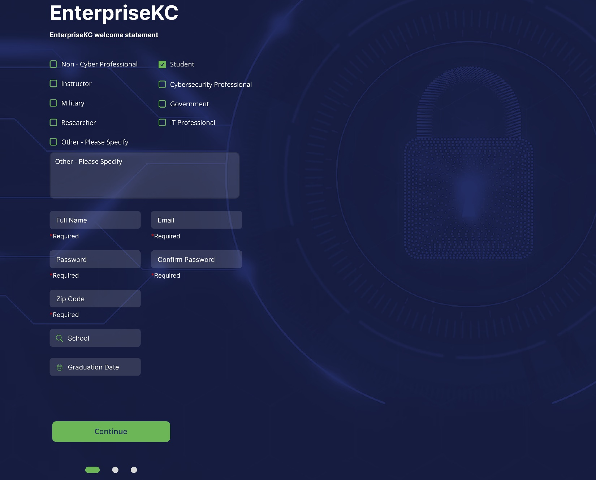
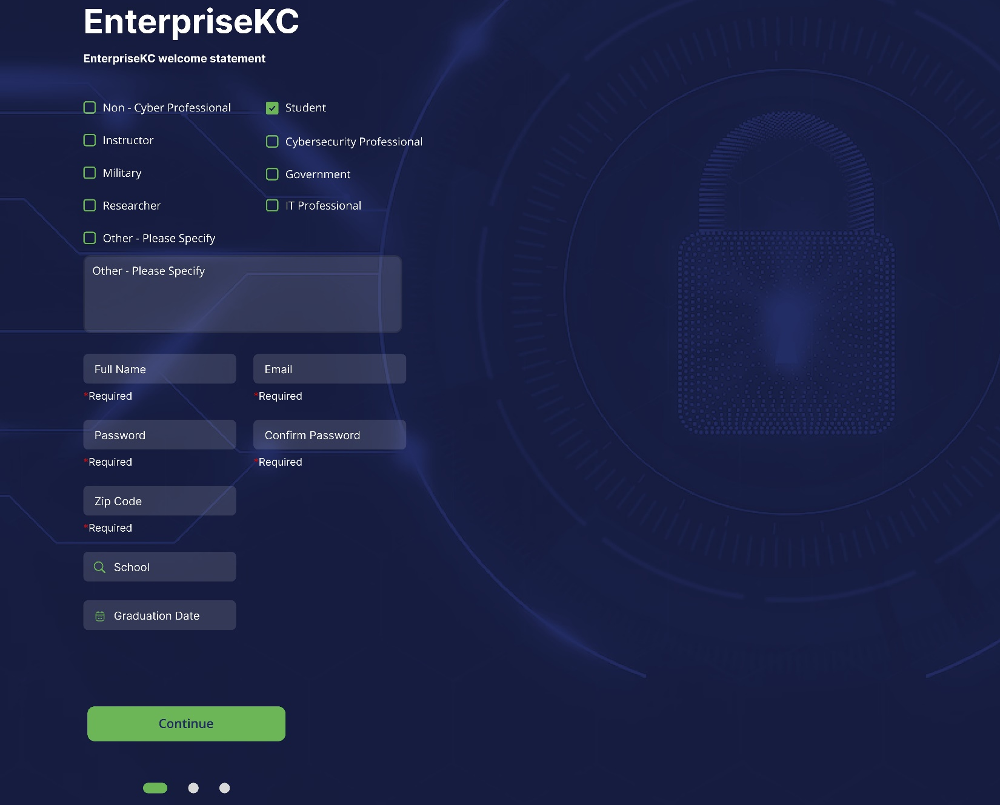
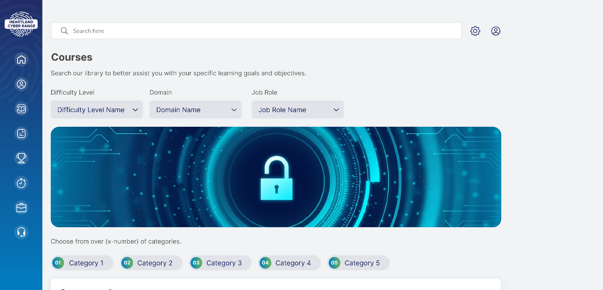

Quick Start Guide
Introduction
This Quick Start Guide is your reference to jumping straight into the Heartland Cyber Range (HCR) platform. This is intended to be a brief introduction to the HCR learning management system (LMS); for more detailed instructions and descriptions, please see the official HCR User Manual.
Getting Started
Accessing the Cyber Range
Requirements
Range access is done through the internet – all that is needed is an internet connection and a web browser. The range is compatible with all major browsers such as Chrome, Edge, and Firefox.
Logging Into the Range
In your preferred web browser, navigate to: https://learning.heartlandcyberrange.com
- If you are a new user, click on the link, ‘Click Here to Register as a New User’.
- If you are a returning user, enter your username and password, then click the ‘Log in’ button.
Alternatively, if you are a returning user and have forgotten your password, click on the ‘Forgot Your Password?’ link for instructions on how to reset your password.
*If logging in for the first time after registering, you may be prompted to verify your email address prior to logging in, if you have not yet done so.
Creating an Account
When registering as a new user, you will be asked to enter information about yourself. Any required information is indicated with a  label.

Continue through the questionnaire to the third and final screen which will ask if you have any interest in regional job opportunities. Indicating ‘Yes’ here will make your HCR profile available to our talent exchange platform.
label.

Continue through the questionnaire to the third and final screen which will ask if you have any interest in regional job opportunities. Indicating ‘Yes’ here will make your HCR profile available to our talent exchange platform.
Navigating the Cyber Range Environment
User Interface Overview
Upon successfully logging in, you will notice a number of different sections in the user interface which are accessible from the navigation bar on the left-side of the screen. We’ll describe each of these below.
 HCR Home
HCR Home
The HCR homepage where you can find announcements, news, and other updates related to the HCR.
 Dashboard
Dashboard
Your “home” screen is your user dashboard, which gives you quick at-a-glance information about your earned experience and quick links to other sections of the range.
 User Profile
User Profile
The User Profile section provides additional progress details, statistics, and announcements related to your user profile.
 Courses
Courses
The courses section allows you to view the various courses that are offered and search through them to find the content best suited to your needs.
 Scenarios
Scenarios
Practice your skills in real-world situations through scenario-based modules and delve into free form explore modules to practice and learn in your own way.
 Leaderboards
Leaderboards
Find out where you rank compared to other users in experience and learning or through competitive play.
 Compete
Compete
Compete in various challenges and team activities such as solo challenges, red & blue team exercises, and cooperative cyber-attack simulations.
 Careers
Careers
The EKC talent exchange portal, where you can showcase your HCR skills to potential employers and search for your next dream job!
 Support
Support
Find options to provide feedback and seek assistance for any issues you encounter while using the HCR.
Virtual Machines and Networks
The HCR is a simulation environment – the computers and networks connecting them that you will interact with are all ‘virtualized’. These virtual machines (VMs) and virtual networks can be created on the fly, allowing for massive flexibility and endless options for creating simulations. The EKC network that powers the HCR provides unparalleled performance, allowing VMs to be spun up in a fraction of the time as other ranges.
Any module that requires a VM to complete will contain a  button. When you click on it, any VMs associated with the module will be started. Each VM will have an icon associated with it [image placeholder] that when clicked on, will open a ‘console’ view to it in a new tab. Simply click anywhere within this console view to begin interacting with the VM as you would any other computer.
button. When you click on it, any VMs associated with the module will be started. Each VM will have an icon associated with it [image placeholder] that when clicked on, will open a ‘console’ view to it in a new tab. Simply click anywhere within this console view to begin interacting with the VM as you would any other computer.
If you begin a lab and are unable to complete it in one setting, any work you have done up to that point will be saved for [update with saved state time] hours. Simply access the lab again, and the VM will be just as you left it. Should you not access the VM within the timeout period, the VM resources will be reclaimed to provide to other users and your work will be lost. Relaunching the lab after this period will start up clean new VMs in their initial state.
When you have finished work in a lab, the VMs and any virtual network resources in use will be reclaimed when you click the [insert ‘complete lab’ button] button. VMs that were in use are ‘destroyed’, meaning any work or information within the VM will be lost, while the resources (RAM, compute, storage) the VM was using will be returned to the EKC network pool.
Start Learning!
Content Organization
Modules
Modules are individual lessons or exercises. They may contain a number of resources such as videos, PDFs, images, etc. Modules may also contain a number of activities such as labs, quizzes, and feedback forms. Scenarios and exercises are modules that allow you to practice and hone the skills you’ve learned. Scenarios mimic real-world situations, and exercises provide goals to achieve while allowing freedom and flexibility to explore.
Courses
Courses can contain several modules and are typically focused on teaching or providing experience in one particular subject or area. Completing courses can potentially earn a user a badge to indicate proficiency in that area and contribute to completion of learning pathways.
Learning Pathways
Learning pathways are predefined, curated collections of courses and modules. Learning pathways are designed to help achieve a specific end-goal such as gaining the appropriate experience required to become a Vulnerability and Threat Analyst, as an example. Having the largest scope in terms of content, a learning pathway may cover a broad range of topics so long as they are all aligned with the subject of the learning pathway.
Where to Start?
Your choice of where to start will depend on your goal. Are you looking for training and experience using a cybersecurity tool you’ve heard about, but are unfamiliar with? Individual modules might be your best option, or even a course if there is one designed for your tool of interest. Maybe instead you have come to the HCR with little to no experience in cybersecurity with an interest in switching careers and breaking into this exciting field; in that case selecting an appropriate learning pathway might be your best option.
Accessing Content
Browse and Search for Content
[INSERT LP INSTRUCTIONS – LPS HAVE NO HOME YET 3.27.24]
Courses can be accessed from the Courses link on the left-hand navigation bar:  Clicking this icon will take you to the Course Library page.
Clicking this icon will take you to the Course Library page.
Scenarios and Exercises can be accessed from the Scenarios link on the left-hand navigation bar:  Clicking this icon will take you to the Scenarios and Exercises library.
Clicking this icon will take you to the Scenarios and Exercises library.
Course Library
The Course Library provides many options for searching and filtering content. Content is organized into categories. Selecting a particular category will allow you to view courses specifically related to it. Categories may have many sub-categories below it. As you drill down and select more specific sub-categories, you will see the scope of the displayed courses narrow appropriately.  You may also search for specific content using the search bar at the top of the screen or use filters to narrow the focus by difficulty level, domain, or by a specific job role.
[MAY NEED REVISION – INTERMEDIARY STEPS?]
Selecting and Launching Modules
Once you have found a module you would like to try out, simply click on the launch button:  Note: The button may indicate ‘Scenario’, ‘Exercise’, or ‘Lab’ depending on the module type.
Each module should contain instructions on how to complete it, along with any other supplementary materials you may need (PDFs, Word docs, images, etc.).
Note: The button may indicate ‘Scenario’, ‘Exercise’, or ‘Lab’ depending on the module type.
Each module should contain instructions on how to complete it, along with any other supplementary materials you may need (PDFs, Word docs, images, etc.).
Competitions and Team Based Exercises
Dive in! There are a number of competitive and cooperative events you can take part in. As these involve multiple users, some events may have restrictions on entry; refer to the event description for details. The examples below provide some insight into the types of events that may be available and are not comprehensive.
Competitions
CTF Events
Capture the flag events require participants to solve challenges and locate “flags”. Flags are typically a string of text in a specific format to make them obvious upon discovery – check the competition description for details. CTF events can be individual, or team based.
Red/Blue/Purple Team Engagements
Red vs. blue team engagements are popular amongst corporations looking to improve their security posture and provide training for employees, however there may be community engagements as well that you may sign up for. During the engagement red teams attempt to attack and infiltrate a computer network while blue teams work to defend it. Purple team engagements allow either side to utilize both offensive and defensive capabilities.
Real World Scenarios
Cyberattack Simulations
Scenarios that simulate particular types of cyberattacks such as phishing campaigns, a ransomware outbreak, or even an active breach by threat actors, for example. Participants may be assigned a particular role and asked to operate in that capacity, in response to the attack.
Incident Response and Posture Management
Typically a group event, participants are put into incident responder roles. Performance is evaluated with metrics such as response time to resolution. Useful for organizations evaluating their IR teams and can also be set up as a community challenge with better performing teams topping the leaderboards.
Getting Help
User Support Channels
Online Documentation
[INSERT URL FOR FAQ HERE]
[INSERT URL FOR USER GUIDE HERE]
User Forums and Community Support
HCR Official Discord #help channel: HCR Discord Server #help
Email HCR Support: support@heartlandcyberrange.com
Act Responsibly
Security and Ethical Considerations
Responsible Use of the HCR
Using a cyber range responsibly is paramount to fostering a secure and constructive learning environment. Responsible use involves adhering to ethical guidelines, respecting the privacy and rights of other users, and refraining from any activities that may cause harm or disruption. Always operate within the designated scope of exercises, refraining from attempting unauthorized actions or exploiting vulnerabilities outside the learning context. Additionally, practicing good cyber hygiene, such as securing your login credentials and reporting any identified vulnerabilities responsibly, contributes to the overall safety and integrity of the cyber range. Responsible use not only promotes a positive learning experience but also reflects the ethical standards expected within the broader cybersecurity community.